학생 PC 한 대에서 실습 스택이 끝까지 켜지고 도는지 30분 안에 확인하는 순서다. 그림은 2026-10-19 클라우드에서 실제로 진행한 화면이다.
학생 PC 한 대에서 실습 스택이 끝까지 켜지고 도는지를 30분 안에 확인하는 순서다. 그림은 모두 2026-10-19에 클라우드(Linux)에서 스택을 실제로 띄워 진행한 순서대로 찍었다. Windows 화면은 클라우드에서 찍을 수 없어 「자리」로 표시했다. 학교에서 처음 확인할 때 그 자리를 채운다.
명령을 치는 창은 세 가지다
명령 상자 위에 어느 창인지 적어 두었다. 명령은 상자 오른쪽 위 「복사」(GitHub · HTML)로 복사해 창에 붙여 넣고 Enter를 누른다. PowerShell 창에서는 마우스 오른쪽 클릭이 붙여넣기다.
표시
여는 법
쓰는 곳
[PowerShell]
시작 버튼 → PowerShell 입력 → Enter
저장소 받기, 버전 확인
[관리자 PowerShell]
시작 버튼 → PowerShell 입력 → 오른쪽 「관리자 권한으로 실행」 → 권한 창 「예」. 창 제목이 「관리자: Windows PowerShell」이면 맞다
Windows 기능 켜기, 권한 설정
[VS Code 터미널]
VS Code에서 실습 폴더를 연 채 위 메뉴 「터미널 → 새 터미널」
실습 코드 실행(python llm_client.py)
.bat 파일은 창을 열 필요 없이 파일 탐색기에서 더블클릭한다.
0. 설치와 실행은 더블클릭 셋이다
순서
할 일
걸리는 시간
1
Git이 없을 때만: [PowerShell] 에 winget install -e --id Git.Git
2분
2
[PowerShell] 에 아래 명령을 붙여 넣는다. 모든 계정이 쓰는 공용 폴더 C:\hyd-iot-edu에 받는다
1~2분
3
파일 탐색기에서 C:\hyd-iot-edu를 열고 설치.bat 을 더블클릭한다. 권한을 묻는 창에서 「예」. XG5000은 따로 설치한다. 설치.bat이 안 되면 E절대로 하나씩 설치한다
처음 20~40분
4
결과 표 끝에 「PC를 다시 시작하세요」가 나오면 다시 시작하고, Docker Desktop을 한 번 열어 약관에 동의한다
5분
5
시작.bat 을 더블클릭한다. Docker Desktop이 꺼져 있으면 스스로 켜고 기다린다
설치.bat이 하는 일. 학교 설치 목록(실습 스택 정보 xlsx, 확인일 2026-10-12)의 1~6번을 목록과 같은 판으로 설치한다(없는 것만). 7번 Arduino IDE는 빼고, 8번 XG5000은 직접 설치한다. 설치는 Windows 기본 설치 도구(winget)가 각 프로그램의 공식 배포처에서 받아 해시를 검사하고 무인 모드로 한다. 이미 있는 프로그램은 바꾸지 않고, 판이 목록과 다르면 결과 표에 「다른 판」 으로 알린다(맞추려면 그 프로그램을 지우고 설치.bat을 다시 실행).
Windows 기능 둘(Linux용 Windows 하위 시스템 · 가상 머신 플랫폼)을 켜고 winget Microsoft.WSL
처음이면 PC를 다시 시작해야 켜진다
1
Docker Desktop
4.87.0
winget Docker.DockerDesktop
로그인한 계정과 「로그인한 모든 계정(Authenticated Users)」을 docker-users 그룹에 넣는다(복제된 PC의 다른 계정도 Docker를 쓴다). 다시 시작한 뒤 한 번 열어 약관 동의
3
Visual Studio Code
1.140.0 System
winget Microsoft.VisualStudioCode(PC 전체)
GitHub Copilot 채팅은 VS Code 안에서 로그인
4
Python
3.14.7
winget Python.Python.3.14(PATH에 넣음)
5회차 실습의 python llm_client.py
5
Node.js
22.16.0
winget OpenJS.NodeJS.22
—
6
Git
버전 무관
winget Git.Git(winget 최신판)
있으면 건너뛴다
8
XG5000
4.73
직접 설치 — 목록의 링크에서 4.73을 골라 받는다
설치.bat은 건드리지 않는다
저장소 폴더가 공용 폴더(C:\hyd-iot-edu 등)이면 로그인한 모든 계정에 쓰기 권한을 주고 Git 신뢰 폴더(safe.directory)로 등록한다. 사용자 폴더(C:\Users\…) 안이면 「옮김 권장」을 띄운다. 목록 밖으로 supabase CLI도 설치를 시도한다(업무 DB를 켜는 데 쓴다. 실패해도 시작.bat이 npx로 대신 받는다). PC 메모리가 8 GB보다 적으면 「부족할 수 있음」이 뜬다.
git clone 뒤 docker compose up만 하면 안 되는 까닭. compose의 서비스 26개는 모두 프로필에 묶여 있고, 켤 프로필은 .env가 정하는데 .env는 저장소에 없다. 업무 DB(Supabase)는 compose 밖에서 따로 켜야 하고, 에이전트용 MCP 두 개는 별도 프로필이다. 시작.bat이 이 넷(.env 강의 배포본 값 · 업무 DB · 시스템 · MCP)을 순서대로 한다.
자리 — Windows에서 설치.bat 결과 표와 Docker Desktop 「Engine running」 화면.
A. 필수 확인 (약 30분)
시작.bat을 더블클릭하면 검은 창에서 아래 순서가 지나간다. 마지막 줄이 완료. 포털: http://127.0.0.1:8088이면 된다.
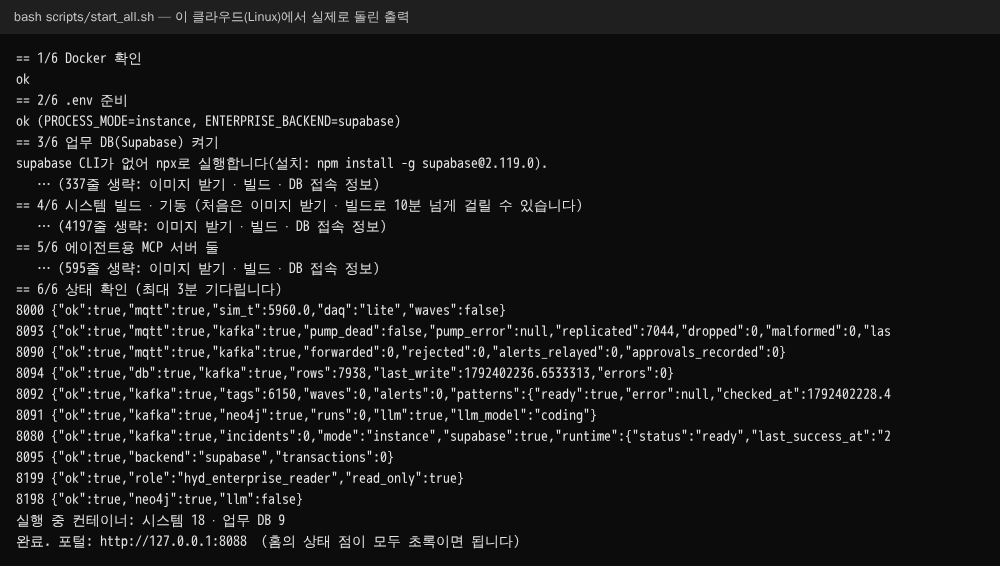
start_all.sh 실제 출력. 6/6 단계에서 포트 10개가 모두 ok, 시스템 컨테이너 18 · 업무 DB 9, 마지막 줄 「완료」
단계는 1/6 Docker 확인 → 2/6 .env 준비 → 3/6 업무 DB(Supabase) 켜기 → 4/6 시스템 빌드 · 기동 → 5/6 에이전트용 MCP 서버 둘 → 6/6 상태 확인이다.
6/6에서 포트 10개(8000 · 8093 · 8090 · 8094 · 8092 · 8091 · 8080 · 8095 · 8199 · 8198)가 모두 {"ok":true …}로 나와야 한다.
컨테이너 수는 이 실행에서 시스템 18 · 업무 DB 9였다. 업무 DB 수는 supabase CLI 판에 따라 다를 수 있다.
그림의 8091 … "llm":true,"llm_model":"coding"은 이 클라우드 셸에 LLM 변수가 들어 있어서 나온 값이다. 학생 PC에서는 "llm":false가 정상이다. 실습 스택은 LLM 키 없이 끝까지 돈다.
자리 — Windows에서 시작.bat을 더블클릭한 창(마지막 「완료」 줄과 「계속하려면 아무 키나 누르십시오」).
브라우저에서 http://127.0.0.1:8088을 연다.
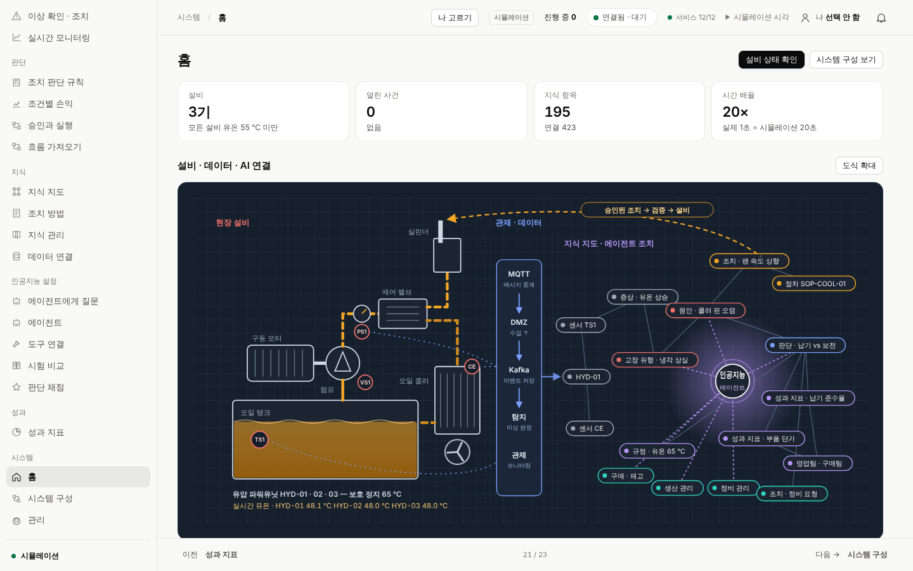
포털 홈. 위 막대에 「서비스 12/12」 초록 점, 설비 3기 · 열린 사건 0 · 시간 배율 20×
위 막대 오른쪽의 서비스 12/12 앞 점이 초록이면 된다.
왼쪽 메뉴 맨 아래 「시스템 구성」을 열면 서비스마다 점이 보인다. FUXA · Prometheus · Redpanda Console처럼 「(선택 도구)」라고 적힌 것은 꺼져 있어도 된다.
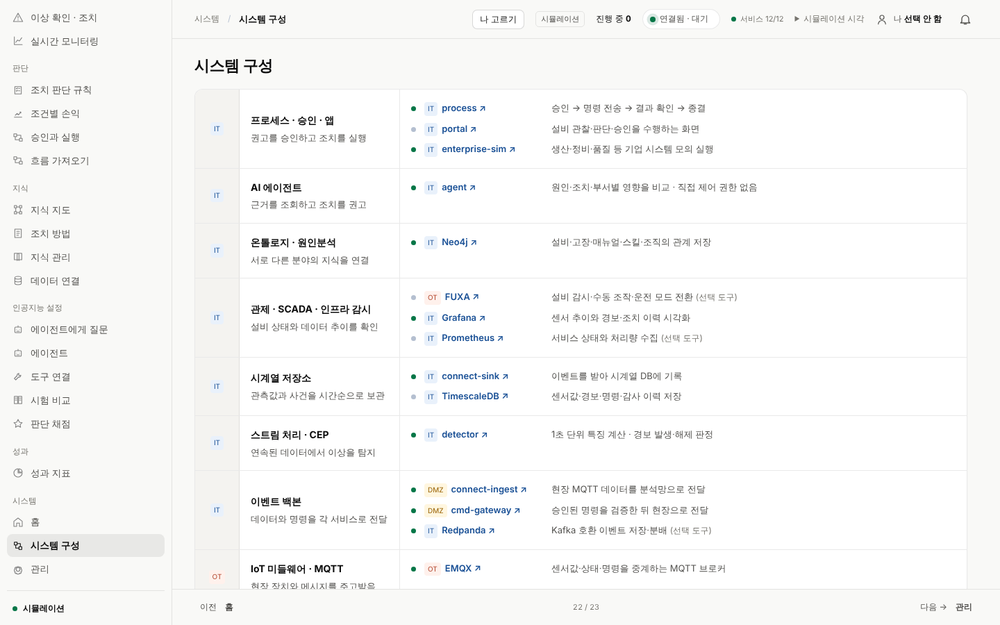
시스템 구성. 서비스마다 초록 점
먼저 알아 둘 것이 있다. 새로 설치한 PC의 지식 그래프는 수업용 구조판이다(SEED_EDITION=structure, 설비 구조 · 센서 · 감시 패턴 · 규정만 들어 있다). 고장 원인과 조치 방법은 수업에서 학생이 매뉴얼을 적재해 만든다. 그래서 새 PC에서는 사건이 「원인 진단 — 시스템 보류」에서 멈추는 것이 정상이다. 승인 · 명령 · 종결까지는 지식이 들어 있어야 간다(③-2).
왼쪽 「내 작업함」에서 나를 김운전 · 운전원으로 고른다.
「결함 시뮬레이션」 → 오른쪽 위 전체 초기화 → 20초쯤 기다린다. HYD-01 · 02 · 03 모두 유온 48.0 ℃, 경보 「감시 중」이 된다.
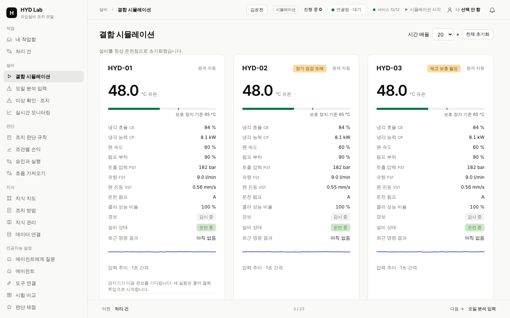
전체 초기화 뒤. 세 설비 유온 48.0 ℃, 경보 감시 중
HYD-01 카드 아래 쿨러 열화 주입을 누른다. 이 실행에서는 약 40초 뒤 경보가 났다(유온 55.6 ℃, 냉각 효율 46 %). 카드의 경보 칸이 「경보 발생 · 쿨러 성능 저하」로 바뀐다.
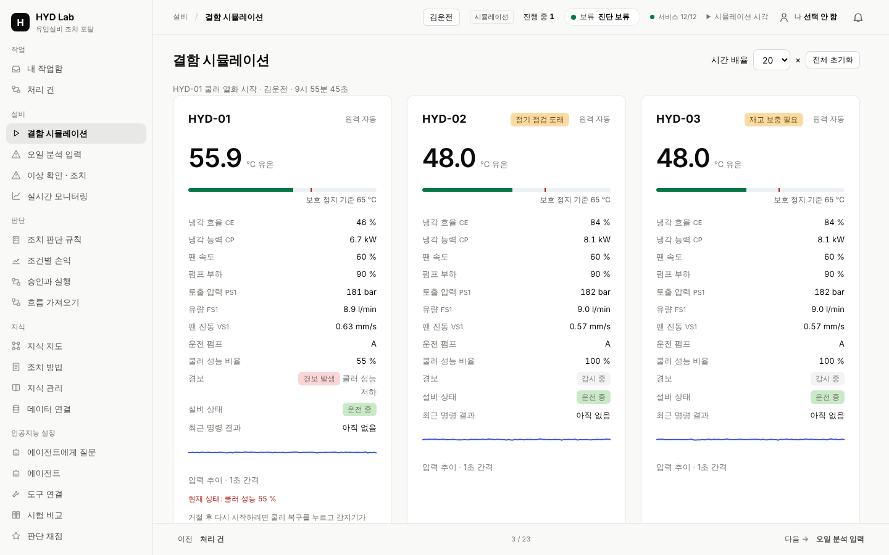
쿨러 열화 주입 뒤 HYD-01. 경보 발생, 쿨러 성능 비율 55 %
「처리 건」을 연다. 새 건이 생기고, 몇 초 뒤 「지금 원인 진단 — 시스템 보류 · 사람 확인 필요」가 된다. 여기까지 오면 설치 확인은 통과다. 설비 → 수집 → 감지 → 프로세스 → 에이전트 → 지식 그래프 · 시계열 DB가 모두 이어져 있다는 뜻이다.
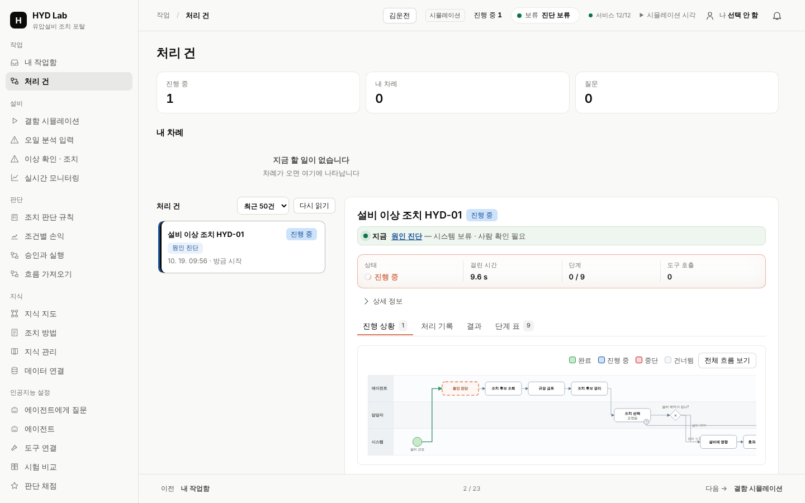
처리 건. 원인 진단에서 시스템 보류
「처리 기록」 탭에 「센서 경보로 시작 → 원인 진단」이 남는다. 보류한 까닭은 지식 그래프에 이 경보의 원인 후보가 없기 때문이다(「현재 관측 근거로 뒷받침되는 원인이 없어 조치를 보류합니다」).
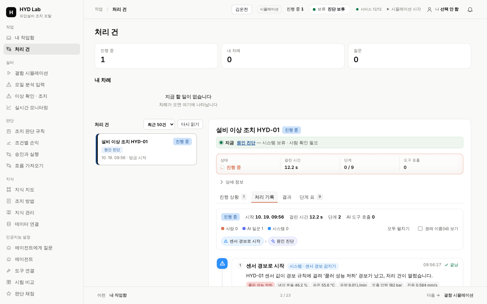
처리 기록. 센서 경보로 시작한 기록
같은 시각 「이상 확인 · 조치」 화면은 이 사건을 「조치 선택 대기 · 조치 후보를 만드는 중…」으로 보여 준다. 처리 건 화면과 표시가 다르지만 고장이 아니다. 판단은 처리 건 화면을 따른다.
보류한 건은 그대로 두면 「책임자 확인」(생산관리자) 단계로 넘어간다(이 클라우드에서 09:43에 열린 건이 09:52에 그 단계였다).
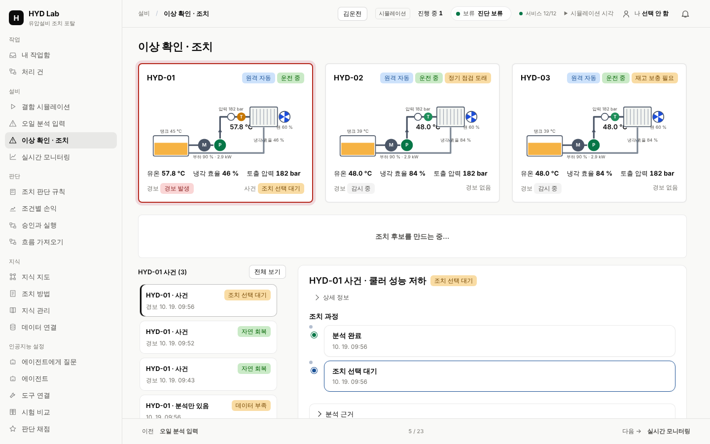
이상 확인 · 조치. 같은 사건이 조치 선택 대기로 보인다
확인이 끝나면 「결함 시뮬레이션」에서 쿨러 복구를 누른다.
이 절은 원인 · 조치 지식이 들어 있는 전체판(SEED_EDITION=full, 회귀 시험과 같은 지식)을 더 적재한 뒤 같은 사건을 돌린 것이다. 학생 PC에서는 수업에서 매뉴얼을 적재한 뒤에 같은 모습이 된다.
나를 이생산 · 생산관리자로 고르고 「결함 시뮬레이션」에서 전체 초기화 → 쿨러 열화 주입. 이 실행에서는 경보까지 약 40초 걸렸다.
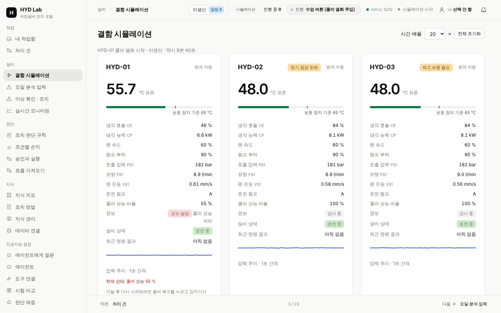
경보 발생. 팬 속도 60 %, 펌프 부하 90 %
에이전트 단계 넷(원인 진단 · 조치 후보 조회 · 규정 검토 · 조치 후보 정리)은 각각 1초 안팎에 끝났다. 「처리 건」의 내 차례에 「조치 선택」이 뜬다. 누르면 승인 요청 카드가 열린다. AI 에이전트 추천은 「부하 70 % + 야간 세척」이었다.
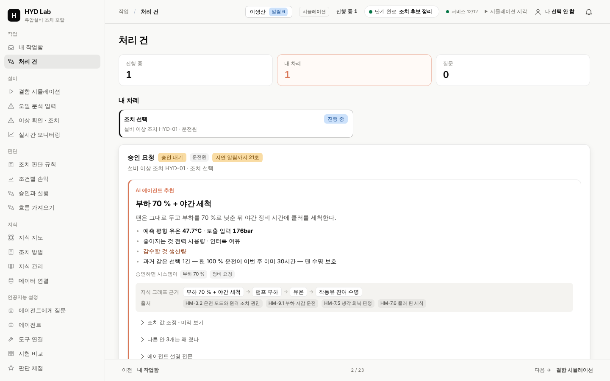
처리 건 → 내 차례 「조치 선택」 → 승인 요청. AI 에이전트 추천 카드와 지식 그래프 근거
맨 아래 사유에 한 줄을 적고 승인을 누른다.
이 추천 카드는 생산관리자 이상만 승인할 수 있다. 같은 화면에서 김운전 · 운전원으로 승인하면 아래처럼 거부된다. 이것은 정상이다(사람 승인 권한 검사).
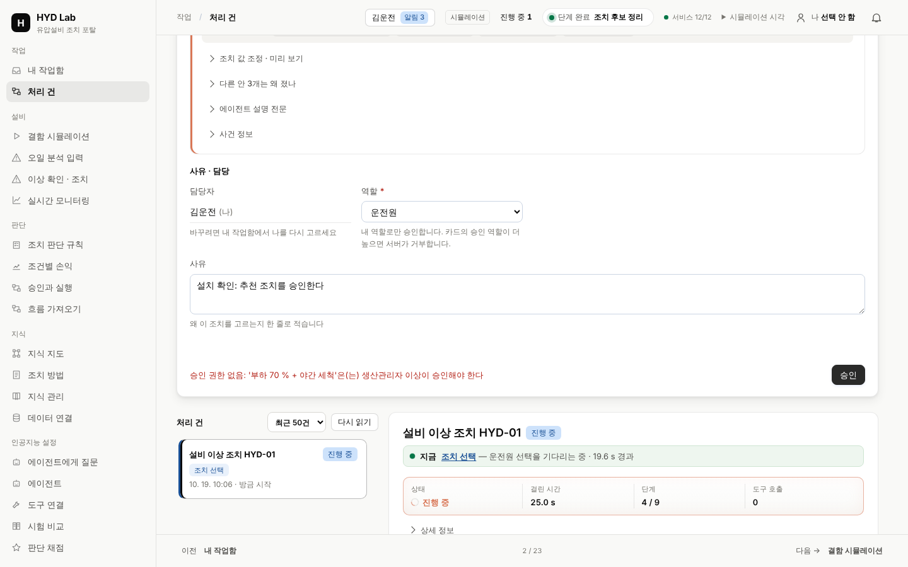
운전원으로 승인했을 때. 「승인 권한 없음: ’부하 70 % + 야간 세척’은(는) 생산관리자 이상이 승인해야 한다」
「조치 선택」은 운전원 공용 단계라 생산관리자의 「내 작업함」에는 뜨지 않는다. 생산관리자는 「처리 건」의 내 차례에서 연다. 승인 기한은 단계가 열린 뒤 약 30초다(흐름의 10분을 20배속으로 줄인 값, 이 클라우드 실측). 지나면 건이 「책임자 확인」으로 넘어가니, 카드가 뜨기 전에 「처리 건」을 열어 두고 바로 승인한다.
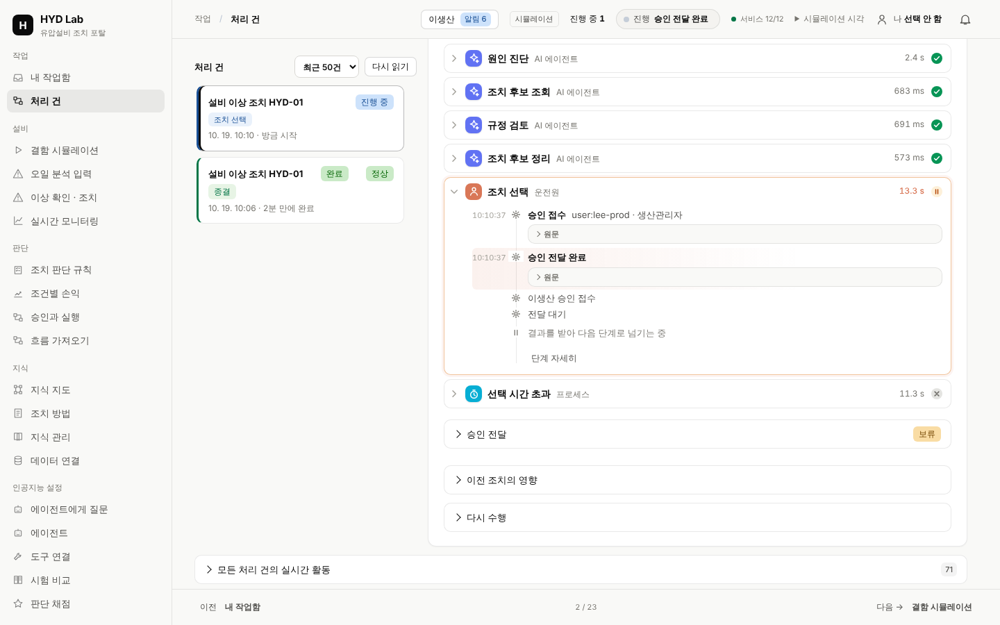
승인 뒤. 조치 선택 단계에 승인 접수 · 승인 전달 완료, 다음은 설비에 명령
승인 뒤 몇 초 안에 「설비에 명령」이 끝난다. 「결함 시뮬레이션」의 HYD-01에서 펌프 부하가 90 %에서 70 %로 바뀌고 「최근 명령 결과 완료」가 된다.
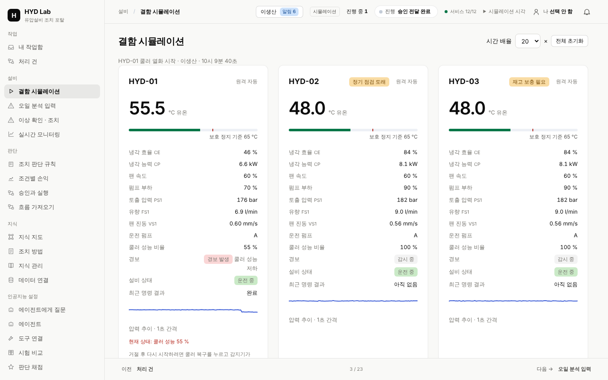
명령 뒤 HYD-01. 펌프 부하 70 %, 최근 명령 결과 완료
효과 확인(재관측)과 정비 요청 등록이 이어지고 건이 완료 · 종결된다. 이 실행에서는 승인부터 종결까지 약 1분 걸렸고, 건 전체는 1분 7초였다.
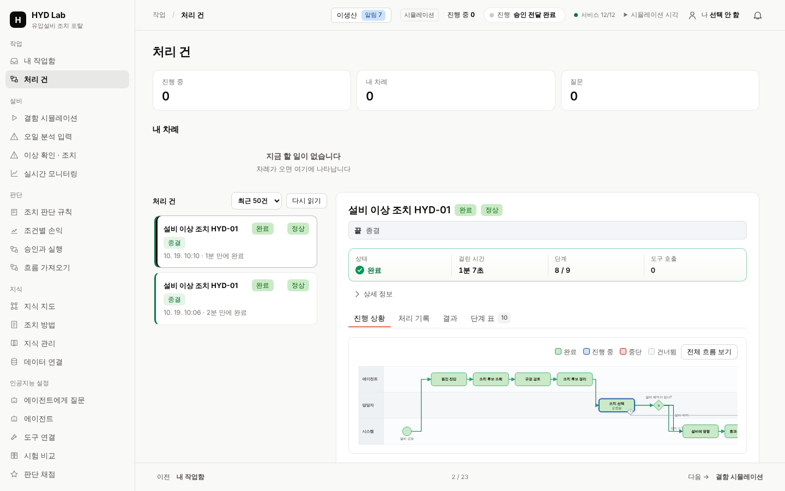
처리 건 완료 · 종결, 단계 8/9
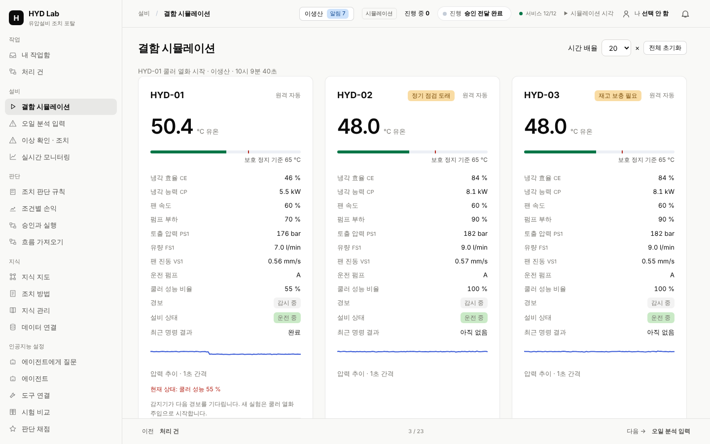
종결 뒤 HYD-01. 유온 50.4 ℃, 경보 감시 중
쿨러 복구를 누른다.
VS Code에서 course/labs/offline/05-2-cause-agent 폴더를 연다.
왼쪽 탐색기에서 .env를 열어 등호 뒤에 적는다. 주소와 키는 수업에서 받은 것이다(창에서 치는 명령이 아니라 파일 내용이다).
OPENAI_BASE_URL=<수업에서 받은 주소>
LLM_API_KEY=<수업에서 받은 키>
LLM_MODEL=coding
저장(Ctrl+S)한 뒤 [VS Code 터미널] 에서 실행한다. 첫 줄이 연결됨 · coding이고 둘째 줄에 서버가 보낸 인사 한 문장이 나오면 된다.
python llm_client.py
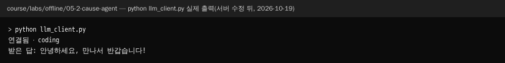
연결됨 · coding — 실제 중계 서버에서 3초
자리 — 같은 화면을 Windows VS Code 터미널에서 찍은 것.
값을 틀렸을 때는 아래처럼 고칠 곳을 알려 준다. 모두 이 클라우드에서 실제로 나온 글이다(맨 위 줄은 서버 쪽 키를 고치기 전의 상태).
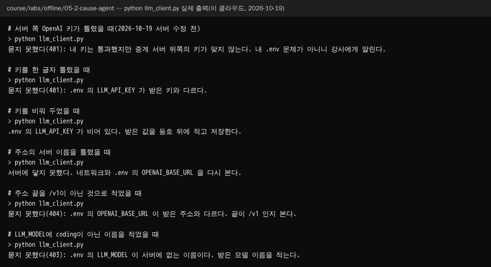
llm_client.py 실제 출력 여섯 가지
나온 글
고칠 곳
LLM_API_KEY 가 비어 있다
.env를 저장했는지(탭 이름 옆 흰 점) 본다
LLM_API_KEY 가 받은 키와 다르다
키를 다시 붙여 넣는다. 앞뒤 따옴표 · 빈칸이 없어야 한다
LLM_MODEL 이 서버에 없는 이름이다
LLM_MODEL=coding. Copilot 채팅의 모델 이름(GPT-6 Luna)과는 별개다
OPENAI_BASE_URL 이 받은 주소와 다르다 · 서버에 닿지 못했다
주소를 다시 붙여 넣는다. 끝이 /v1이다. 학교 네트워크가 막혔는지도 본다
중계 서버 뒤쪽의 키가 맞지 않는다 · 서버가 지금 요청을 받지 못한다
학생 쪽 문제가 아니다. 강사에게 알린다. 429는 1분 뒤 다시 실행하면 대개 풀린다(서버가 막 깨어날 때 한 번 관찰)
B. 화면만 열리는지 (시간 나면)
포털 왼쪽 메뉴에서 차례로 누르고, 별도 도구는 주소를 연다. 화면이 뜨면 통과다.
화면
여는 곳
실시간 모니터링
포털 메뉴
지식 지도
포털 메뉴
조치 판단 규칙
포털 메뉴
조건별 손익
포털 메뉴
지식 관리
포털 메뉴
흐름 가져오기
포털 메뉴
FUXA (설비 운전 화면)
http://127.0.0.1:1881
Grafana (설비 추세)
http://127.0.0.1:3000
Neo4j Browser (지식 그래프)
http://127.0.0.1:7474 — 로그인 화면이 뜨면 통과
Supabase Studio (업무 DB)
http://127.0.0.1:54323
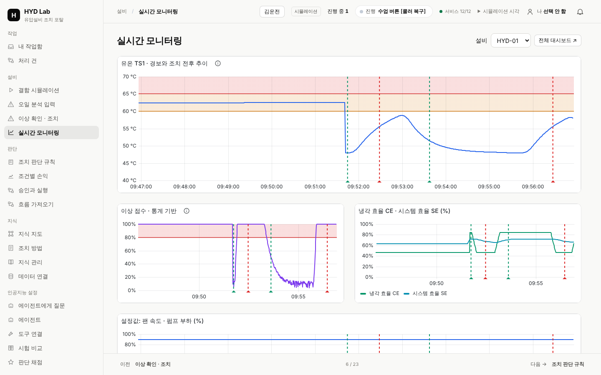
실시간 모니터링
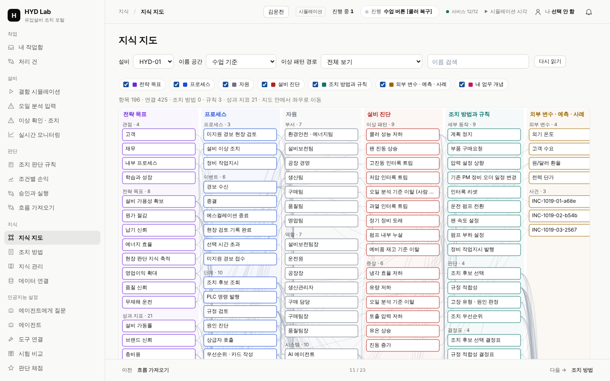
지식 지도
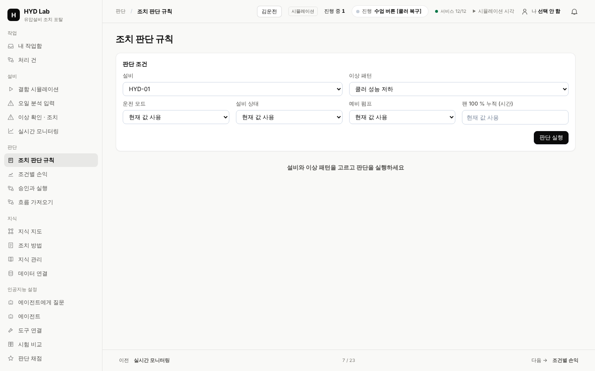
조치 판단 규칙
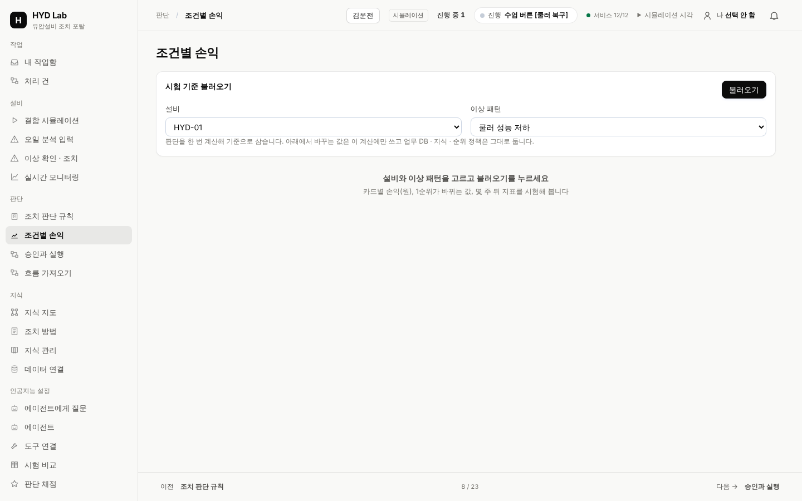
조건별 손익
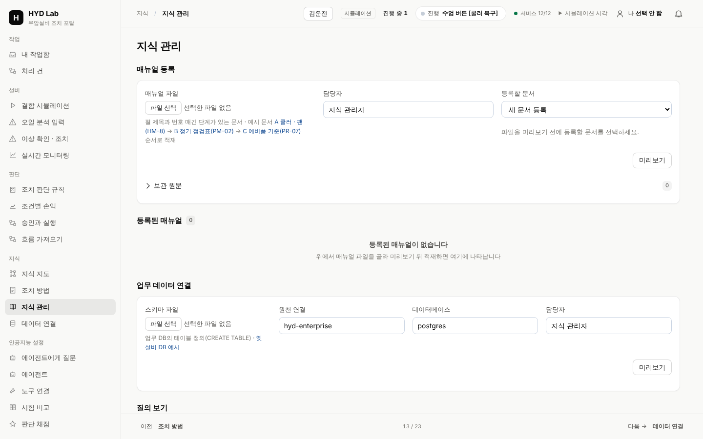
지식 관리
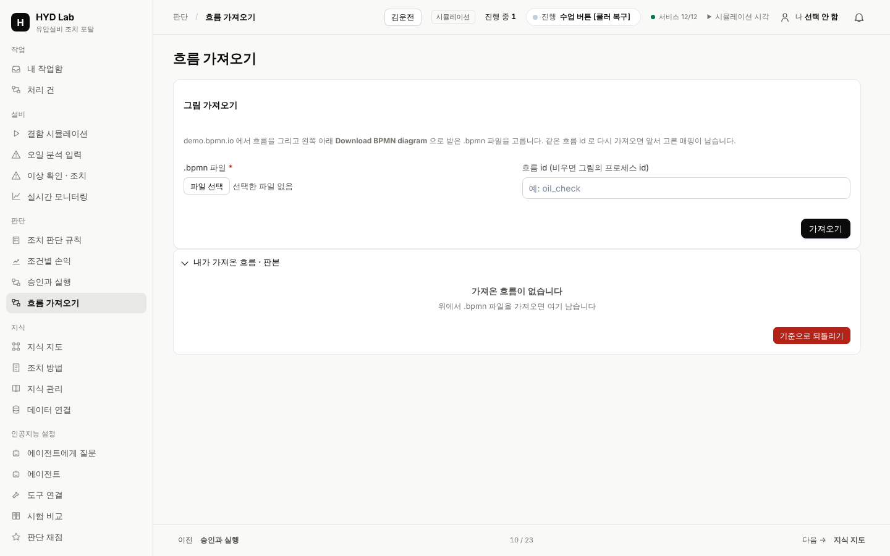
흐름 가져오기
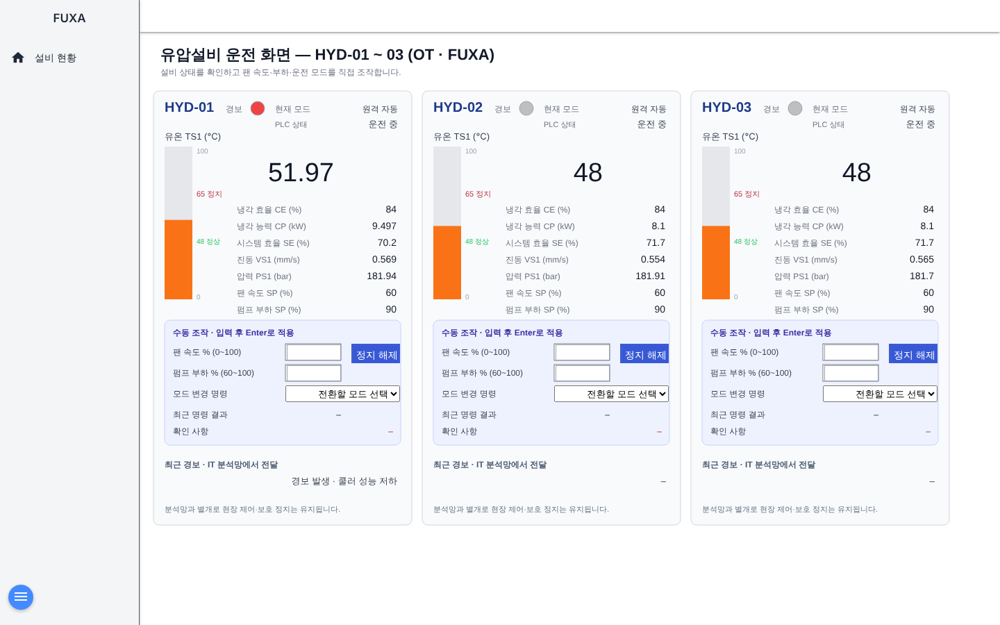
FUXA :1881
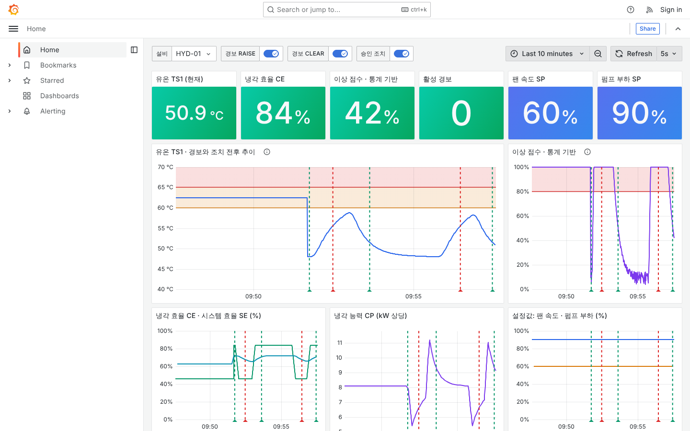
Grafana :3000
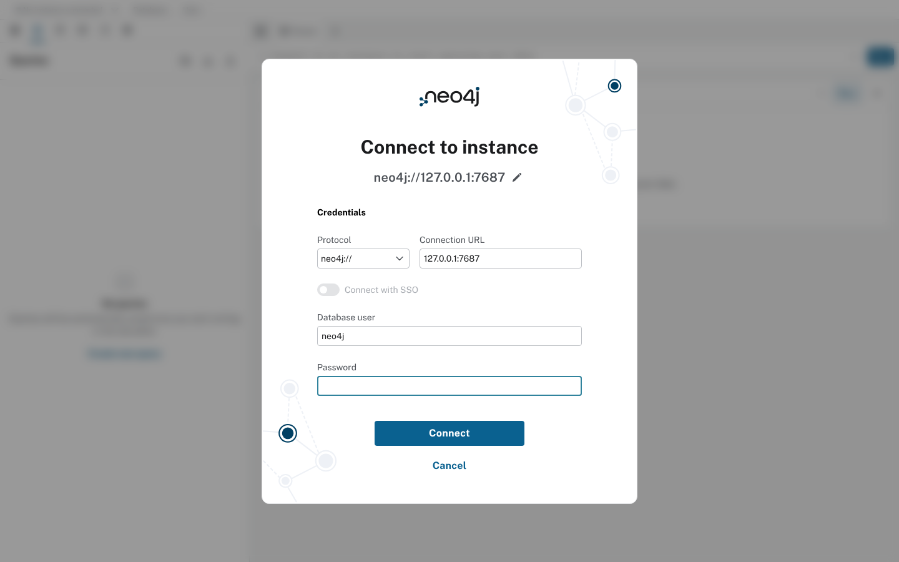
Neo4j Browser :7474
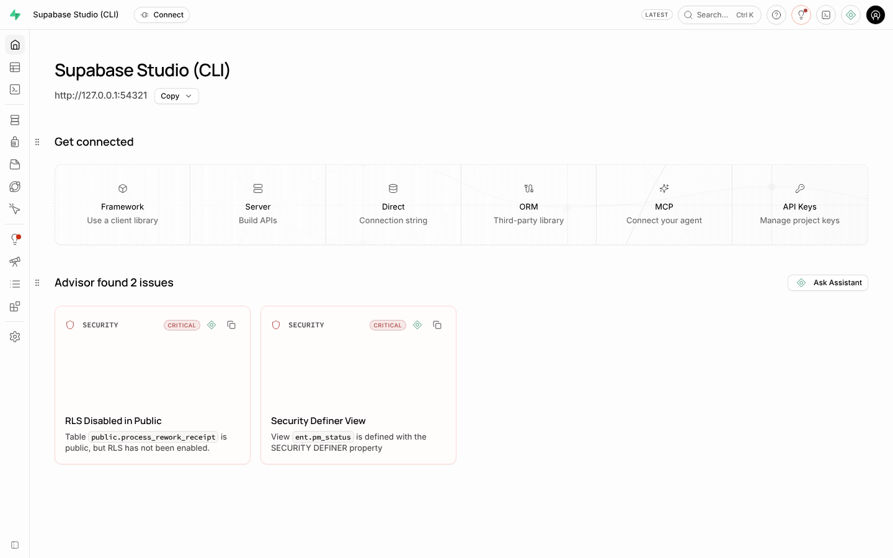
Supabase Studio :54323
C. 막혔을 때 첫 조치
시작.bat 창에 [멈춤]으로 시작하는 줄이 나오면 그 줄의 뜻과 첫 조치는 아래와 같다. 더 자세한 것은 문서/시스템/참조/RUNBOOK.md §3이다.
[멈춤] 문구
뜻
첫 조치
Git for Windows가 없습니다
시작.bat이 bash를 못 찾았다
Git을 설치하고 다시 더블클릭
docker 명령이 없습니다
Docker Desktop이 없거나, 설치 뒤 PC를 다시 시작하지 않았다
설치.bat → PC 다시 시작 → 다시
Docker가 응답하지 않습니다
시작.bat이 Docker Desktop을 켜고 3분 기다렸지만 엔진이 뜨지 않았다
Docker Desktop 창을 열어 약관 동의 창이 있으면 동의하고, 「Engine running」을 기다린 뒤 다시
docker compose가 없습니다
Docker Desktop이 오래된 판
Docker Desktop 최신판 설치
Supabase가 켜지지 않았습니다
업무 DB 포트(54321~54329) 충돌이나 이미지 받기 실패
cd it/supabase && supabase stop 뒤 다시(RUNBOOK §3 「Supabase 포트 충돌」)
docker compose up이 실패했습니다
이미지 받기 · 빌드 실패
창의 오류에서 서비스 이름을 찾아 docker compose logs <서비스>. 429 · Too Many Requests면 잠시 뒤 다시(D절)
enterprise-mcp · dmn-mcp가 올라오지 않았습니다
MCP 서버 두 개가 안 떴다
docker compose up -d enterprise-mcp dmn-mcp를 다시
응답하지 않는 포트: …
3분 안에 상태 확인이 끝나지 않았다
8080이면 docker restart hyd-iot-edu-process-1(RUNBOOK §3 첫 줄). 메모리로 죽으면 Docker Desktop 메모리 4 GB 이상
포털에서 경보가 안 나면 HYD-01 카드의 운전 모드가 원격 자동인지 본다(RUNBOOK §3 「승인했는데 PLC ACK가 없다」 · 「경보가 안 난다」).
D. 메인 PC 한 대에 설치하고 학교가 나머지 PC로 복제한다
학교는 메인 PC 한 대에 설치하면 나머지 PC에 그대로 복제해 준다. 이미지를 받는 PC가 한 대뿐이니, 여러 대가 같은 학교 IP로 동시에 받다가 막히는 일(Docker Hub 429)은 생기지 않는다. 복제한 PC가 이미지를 다시 받지 않고 바로 켜지려면, 복제 전에 메인 PC에서 아래를 끝내 둔다.
저장소를 공용 폴더 C:\hyd-iot-edu에 받고(0절 2번) 설치.bat으로 6개를 설치한다(XG5000은 따로). 프로그램은 모두 PC 전체 설치라 복제된 PC의 모든 계정이 쓴다.
시작.bat을 한 번 끝까지 돌린다. 이미지 받기 · 빌드가 이때 끝나 메인 PC에 남는다.
A절 ①~③-1을 확인한 뒤 「결함 시뮬레이션」 → 전체 초기화, 그리고 끄기.bat.
그 상태로 학교에 복제를 맡긴다.
복제된 PC에서 시작.bat이 다시 이미지를 받기 시작하면(4/6 단계에서 Pulling … 줄이 길게 이어진다) 복제에 Docker 데이터가 빠진 것이다. Docker Desktop은 이미지를 Windows 사용자 계정마다 저장한다(%LOCALAPPDATA%\Docker). 학생이 메인 PC와 다른 계정으로 로그인하면 이미지가 없을 수 있다. 이때는 한 대씩 차례로 시작.bat을 돌린다.
이 클라우드에서도 첫 기동 중 Supabase 이미지(public.ecr.aws)를 받다가 레지스트리 한도에 걸려 재시도한 줄이 실제로 나왔다(재시도로 통과). 여러 대가 동시에 받으면 이런 줄이 늘고 결국 멈출 수 있다.
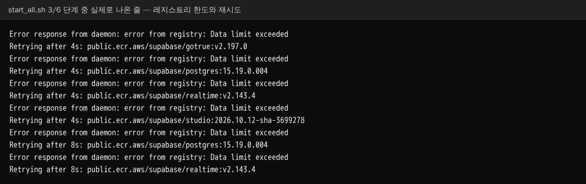
실제로 나온 레지스트리 한도 줄 — Data limit exceeded, Retrying after 4s
E. 하나씩 직접 설치하기 (설치.bat이 안 될 때)
설치.bat이 하는 일을 손으로 하는 순서다. 판은 학교 설치 목록과 같다(7번 Arduino IDE 제외). 링크는 각 프로그램의 공식 내려받기 주소다(눌러서 받은 파일을 더블클릭해 설치). 이미 설치된 프로그램은 건너뛴다. 창 여는 법은 맨 앞 「명령을 치는 창은 세 가지다」.
[관리자 PowerShell] 에 두 줄을 붙여 넣는다(Windows 기능 둘을 켠다). 줄마다 「작업을 완료했습니다」가 나오면 된다.
파일 탐색기에서 C:\hyd-iot-edu\시작.bat을 더블클릭한다. 그다음은 A절이다.
F. 이 문서가 확인하지 못한 것
Windows에서 설치.bat · 시작.bat · 끄기.bat을 더블클릭하는 것(「자리」 표시). 설치.bat의 PowerShell은 문법 검사와 버전 확인 함수만 Linux의 PowerShell 7에서 돌렸고, 시작.bat의 Docker Desktop 자동 켜기는 가짜 docker로 네 경우(곧 켜짐 · 끝내 안 켜짐 · 이미 켜짐 · 미설치)만 시험했다. winget 설치 자체는 Windows에서만 확인할 수 있다.
학교 네트워크에서 LiteLLM 서버 · Docker Hub에 닿는지.
학교의 복제 방식으로 Docker 이미지가 함께 복제되는지(D절).
E절의 직접 설치 순서. 링크는 winget 목록이 쓰는 공식 주소와 같음을 확인했지만, 설치 화면 문구는 Windows에서 따라가 보지 않았다.
③-2를 학생 PC의 수업 흐름(매뉴얼 적재 뒤)으로 돌린 것. 이 문서의 ③-2는 회귀 시험용 전체판 지식으로 돌렸다.